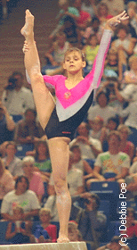
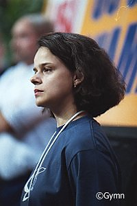

Natalia Laschenova (USSR)
1989 World Silver AA Medalist
 |
 |
In 1990 Natalia competed at the USA-USSR dual meet (left). In 2001
Natalia was at the US Championships -- but now as a coach (right).
|
|
Medal Total
- Olympic Games: 1 Gold
- World Championships: 1
Gold, 1 Silver
|
Natalia was born on September
16, 1973 in Elgava (Latvian SSR). She moved to Riga when very young and was coached by
Alexander Miretski at Dynamo Riga. After a long and successful career,
Natalia married fellow gymnast Nikolai Tikhonovich. (Tikhonovich, his
brother and another man robbed Vitaly Scherbo's apartment in late 1992 and spent
several years in prison.) She divorced Tikhonovich and is now married to a
former boxer. She currently
lives in Ohio with her husband and children. Her oldest daughter, Sasha, competed on the gymnastics team at University of Bridgeport.
-
- Competition Results
-
- 1983
- Spordileht International: 1st V
-
- 1985
- Riga International: 3rd AA, 1st B, 2nd V
-
- 1986
- Belgian Gym Masters: 1st AA, 1st V, 1st UB, 1st FX, 2nd B
- Junior Friendship Tournament (Druzhba): 1st Team, 3rd AA,
1st V, 1st B, 2nd FX
- Moscow News: 4th AA, 1st FX, 2nd V
Riga International: 2nd AA, 1st FX
Riga-Rostock Dual Meet: 1st Team, 1st AA, 1st V, 1st FX
USSR Spartakiade: 2nd V
-
- 1987
- Kraft International: 8th AA, 1st V
- Riga International: 3rd AA
- USA-USSR Dual Meet: 1st Team, 2nd AA
- USSR Championships: 5th AA
-
- 1988
- DTB Cup: 4th AA, 3rd FX, 4th V, 5th UB
- European Cup: 3rd AA, 1st UB, 3rd B
Golden Sands International: 1st AA
- Hungarian International: 2nd AA, 1st V, 1st FX,
2nd UB,
2nd B
Kosice Cup: 1st AA
- Olympic Games: 1st Team, 5th AA
- USA-USSR Dual Meet: 1st Team, 7th AA
- USSR Cup: 3rd AA
-
- 1989
- Chunichi Cup: 1st AA
- DTB Cup: 2nd AA, 1st V, 1st B, 2nd FX
- Joachim Blume Memorial: 2nd AA
Konica Cup: 1st AA, 1st V, 1st FX, 2nd UB, 3rd B
- Moscow News: 5th AA
- Tokyo Cup: 1st V, 2nd B
- USSR Championships: 1st AA
- USSR Cup: 9th AA
- World Championships: 1st Team, 2nd AA, 4th V
-
- 1990
- DTB Cup: 3rd AA, 1st B, 4th FX, 5th V, 5th UB
- Gander Memorial: 1st AA
- Moscow News: 1st AA, 1st FX
Swiss Cup: 1st Team
- USA-USSR Dual Meet: 1st Team, 3rd AA
-
- 1991
- University Games: 2nd Team, 5th AA, 1st FX, 2nd V, 2nd
B
- World Sports Fair: 5th AA, 2nd V, 5th UB, 8th
FX
-
This page was last updated on December 30, 2023.
© Gymn Forum